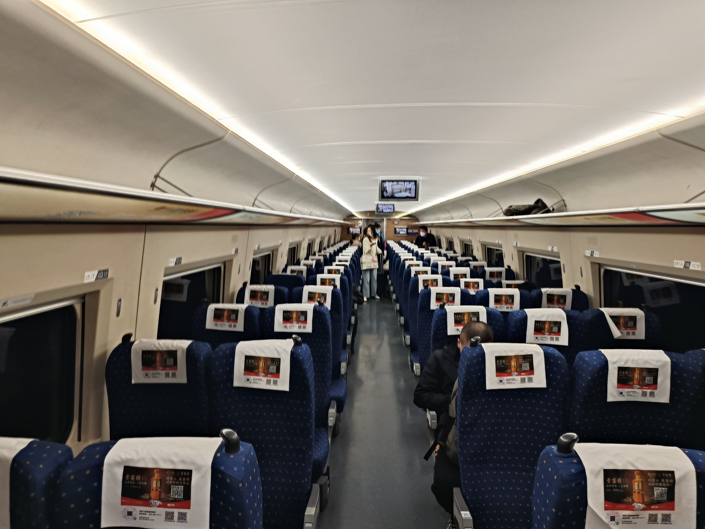

如何乘动车(俗称高铁)
发布时间:2023-07-25
动车席别
-
二等座

-
一等座
-
特等座
-
商务座
| 座椅 | 服务 | 价格 |
|---|---|---|
| 最普通的席位,可调节 和谐号较软,复兴号较硬 布局为3+2,为ABC-DF布局 充电口3个座或2个座共用一个 小桌板在前面的座上 |
没有特殊的服务 "啤酒饮料矿泉水"还是会来 |
动车上最便宜的席位 大家都乘过，无需特别介绍 |

| 座椅 | 服务 | 价格 |
|---|---|---|
| 较高级的席位，有头枕 硬度与二等座差不多,但略软 布局为2+2,为AC-DF布局 充电口2个座共用一个 小桌板放在了座椅扶手内 智能动车还有腿托 个人感觉是最舒适的（大部分人认为是商务座） |
长途跨局车会免费发放小零食包和不另外收费的饮料 短途管内车"啤酒饮料矿泉水"还是会来 |
价格约为二等座的1.5倍 个人感觉短途价格适中,短途推荐选择此席别 (长途太贵,还是乖乖买二等座吧 o(╥﹏╥)o) |
| 座椅 | 服务 | 价格 |
|---|---|---|
| 与一等座完全相同,只是放在了商务座客室里 布局为2+1,为AC-F布局 |
与一等座完全相同,但是可能略好一点 | 价格约为二等座的1.8倍 为一等座的1.2倍 介于与一等座完全相同,不建议购买此席别的票 |

| 座椅 | 服务 | 价格 |
|---|---|---|
| 最高档的席位，没有之一 是电动沙发，可以按电钮调节 布局为2+1或1+1,为AC-F或A-F布局 配有娱乐系统（部分复兴号没有） 智能动车和部分CR200J有独立的包厢 小桌板放在了座椅扶手内 |
有专属候车室使用，里面的饮料零食不另外收费 有优先进站通道和优先检票通道 会有好看的小姐姐送上车 会免费发放小零食包和不另外收费的饮料 还有，跨局车饭点有免费盒饭赠送 |
服务超级好，但价格超级贵 价格约为二等座的3.2倍,一等座的2倍 一般只有领导陪客人或者没票了才会买此席别 |
购票
网络购票：直接进入12306官网电话购票：（出发地 区号）95105105
通过网络购票的步骤
- 1.注册账号
- 2.首页选择出发车站，到达车站还有日期
- 3.选择合适的车次和席别，点击预订
- 4.选择席别和乘车人，座位
- 5.确认购票信息，支付票款
- 6..个人中心查看你的车票和座位
去车站
你可以通过地铁，公交，开车（不推荐），打的等方式到火车站乘车要注意的是，有些城市有好几个火车站，不要走错了，否则很容易误车
比如杭州有杭州站，杭州东，杭州南，杭州西，临平南站.注意杭州站，本地人称其为城站
如果误车了，你可以改签之后又余票的列车，不收改签费(但是只有一次机会)
进入车站
到达车站后，按照牌子上的提示找到进站口进站时，不用取车票，直接进入候车室
然后，把身份证放到第一道闸门上，进行人证核验。有些车站要求你要有车票才能进入
接着过安检，按照提示即可。不准携带汽油，烟花，宠物等高危物品，详细见车站违禁品表
注意：如果你要报销或者留个纪念，到自动售票机打印报销凭证,建议乘车后取
站内
找到你的检票口，在这附近等车。看清楚车票上的车次和屏幕上的车次，当变绿后方可检票注意：各个车站停止检票时间不同，如杭州东站是提前3分钟停止检票，所以不要掐点到，建议提前1个小时到
检票开始后,可以走自助或者人工通道,持其他证件的走人工通道
上车
按照提示的地标颜色，找到你自己的车厢，等火车来了，先下后上。按照票面提示和座位号标，找到自己的座位即可
车上
安安心心享受旅途，注意报站。不要睡过头了。如果下一站是你要下车的站（部分一站直达车和你的目的地是终点站除外），做好准备。
大件行李可放在大件行李存放处
由于动车是密闭的，建议不要吃方便面和榴莲等刺激性大的食物（而且动车上的人流行动车外卖和动车盒饭）
注意：如果你不小心睡过头了，可以不用补票，找列车长开具客运记录
到站和出站
当火车报站后，可以下车然后根据指示牌出站，把身份证放出站闸门上即可出站
根据提示牌可以找到地铁，公交等
FAQ
-
1.小孩没身份证可以乘火车吗?
对不起,2023年7月20日之后,儿童须持有有效身份证件(身份证,户口本,护照等)方可进站
-
2.身份证丢了怎么办?
可以去车站窗口申请一个身份证明(前提是办理过身份证)
-
3.在火车上丢东西了如何处理?
可以在12306上登记你的丢失物品,有几率可以找回来
-
4.几米以下可以买半票?
现在按照年龄售票,6岁以下无票无座,14岁以下半票有座